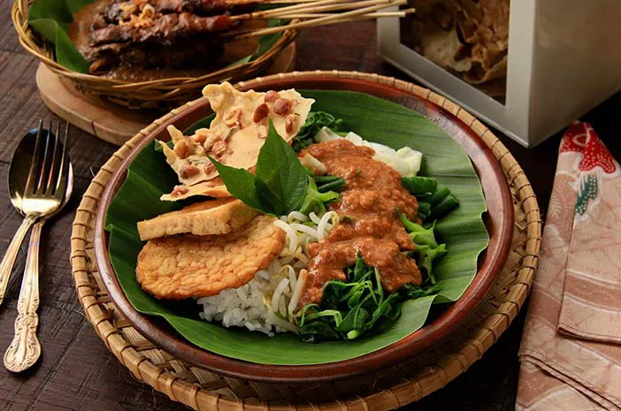

Resep Nasi Pecel Madiun, Makan siang yang Dijamin enak dan sehat

Bahan-bahan:
- Nasi putih
- 100 gram tauge
- 100 gram bayam
- 200 gram kangkung
- 200 gram kacang panjang, potong 2 cm
- 2 buah mentimun, cincang
- 70 gram daun kemangi
- Tempe dan tahu, digoreng
Sambal pecel
- 250 ml air panas
- 250 gram sambal pecel khas Madium siap santap
- 1 sendok makan kecap manis
Cara Membuat:
- Sambal pecel: Lumatkan sambal pecel dengan air panas. Tambahkan kecap manis, aduk. Sisihkan.
- Didihkan air, rebus sayuran secara terpisah dimulai dari taoge, bayam, kangkung, dan kacang panjang. Tiriskan. Sisihkan..
- Goreng tempe dan tahu hingga kecokelatan, angkat dan tiriskan.
- Sajikan nasi, sayur-sayuran rebus, mentimun, tempe, tahu di atas piring.
- Siram dengan sambal pecel dan tambahkan kecap manis jika diinginkan.
- Nasi Pecel Madiun siap disajikan!